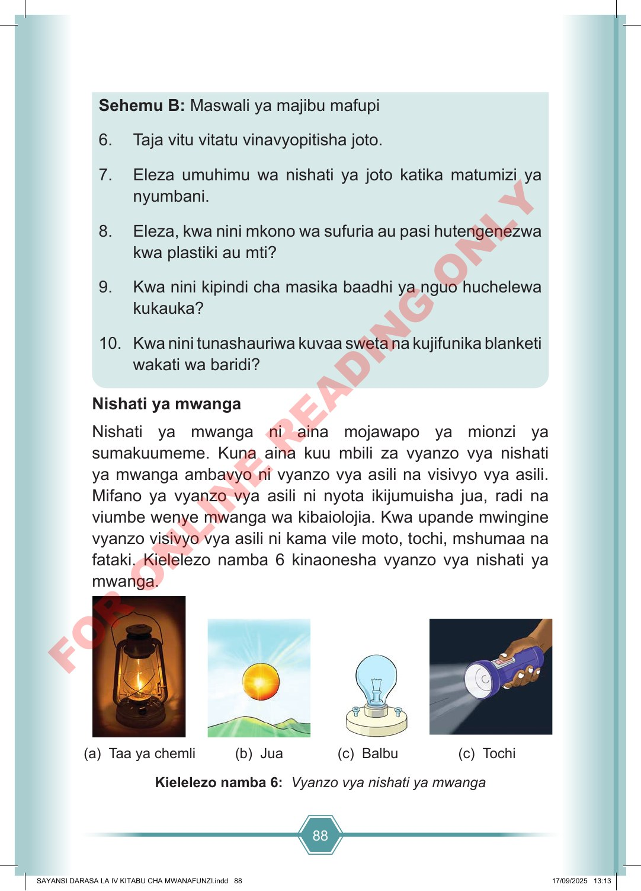

88 Sehemu B: Maswali ya majibu mafupi 6. Taja vitu vitatu vinavyopitisha joto. 7. Eleza umuhimu wa nishati ya joto katika matumizi ya nyumbani. 8. Eleza, kwa nini mkono wa sufuria au pasi hutengenezwa kwa plastiki au mti? 9. Kwa nini kipindi cha masika baadhi ya nguo huchelewa kukauka? 10. Kwa nini tunashauriwa kuvaa sweta na kujifunika blanketi wakati wa baridi? Nishati ya mwanga Nishati ya mwanga ni aina mojawapo ya mionzi ya sumakuumeme. Kuna aina kuu mbili za vyanzo vya nishati ya mwanga ambavyo ni vyanzo vya asili na visivyo vya asili. Mifano ya vyanzo vya asili ni nyota ikijumuisha jua, radi na viumbe wenye mwanga wa kibaiolojia. Kwa upande mwingine vyanzo visivyo vya asili ni kama vile moto, tochi, mshumaa na fataki. Kielelezo namba 6 kinaonesha vyanzo vya nishati ya mwanga. Kielelezo namba 6: Vyanzo vya nishati ya mwanga (a) Taa ya chemli (b) Jua (c) Balbu (c) Tochi SAYANSI DARASA LA IV KITABU CHA MWANAFUNZI.indd 88 SAYANSI DARASA LA IV KITABU CHA MWANAFUNZI.indd 88 17/09/2025 13:13 17/09/2025 13:13 F O R O N L I N E R E A D I N G O N L Y